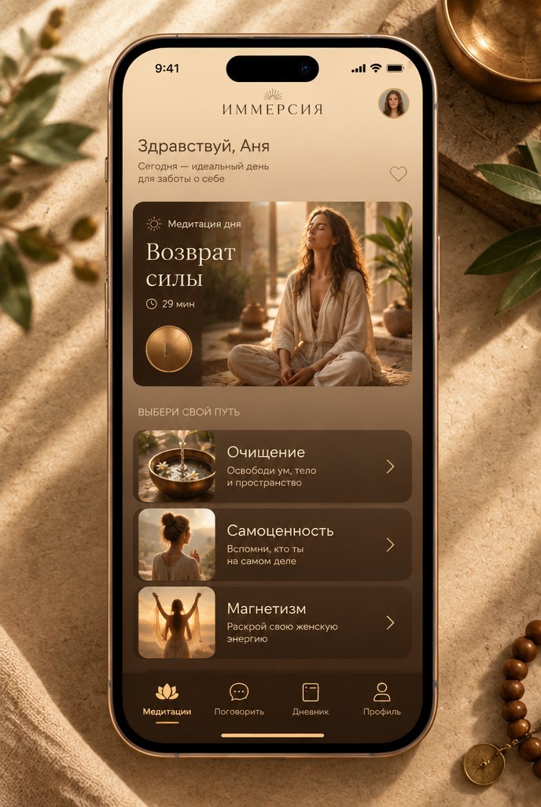
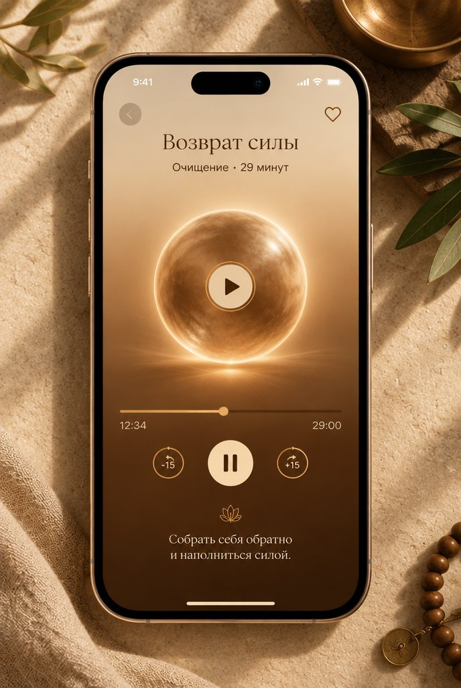
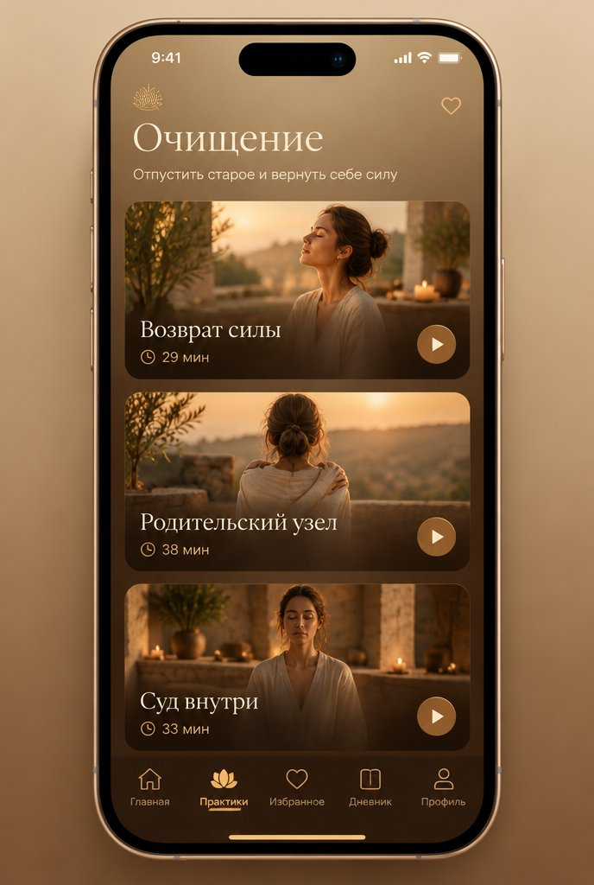
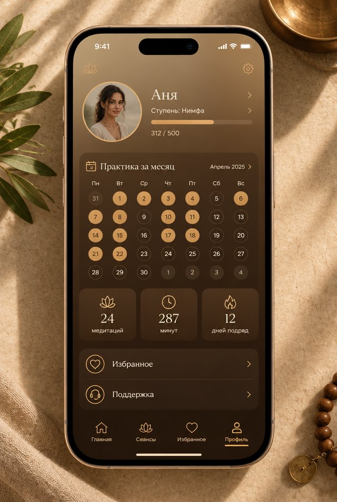
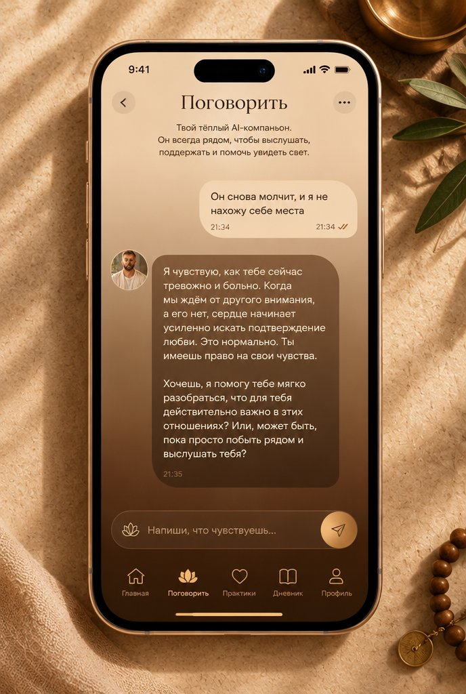

Иммерсия · №5 карамель · орех · бронза · градиент
Наши экраны в этом дизайне
Выбранный тобой стиль (№5), фон — градиент от бежевого к коричневому, наши реальные экраны и русские надписи. Чистый русский шрифт без засечек.

Главная · приветствие, медитация дня, разделы

Практика · «Возврат силы», плеер, −15/+15

Раздел «Очищение» · список практик

Профиль · ступень, календарь, статистика

Поговорить · чат с психологом